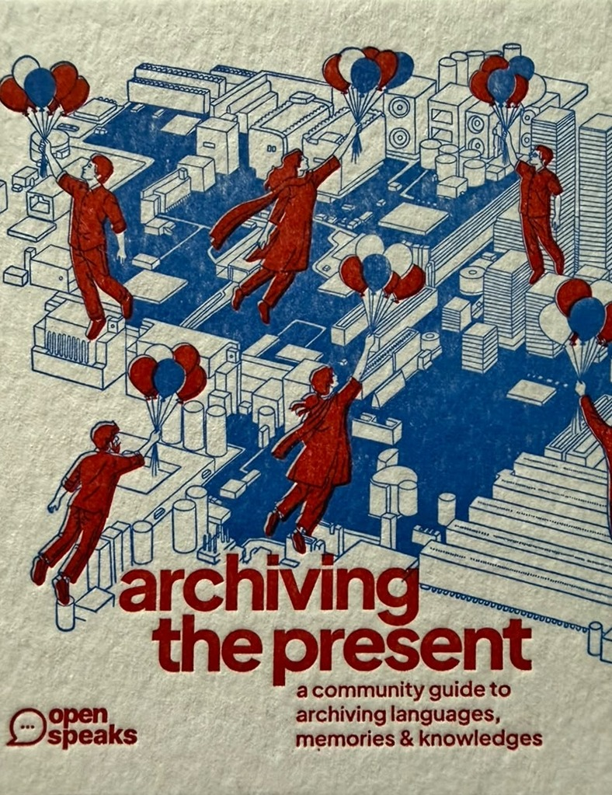

Archiving the Present

a community guide to archiving languages, memories & knowledges
An emerging network of language and memory keepers — led by OpenSpeaks.
Launching 3 September 2026 · Kochi
a community guide to archiving languages, memories & knowledges
An emerging network of language and memory keepers — led by OpenSpeaks.
Launching 3 September 2026 · Kochi